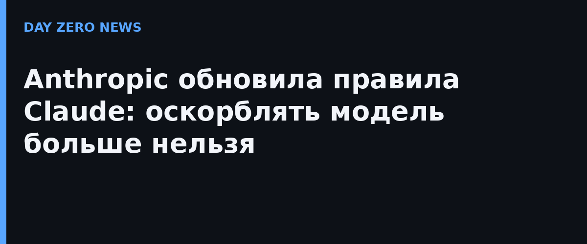

Anthropic ежегодно обновляет свои правила использования, и в этот раз самым обсуждаемым пунктом стал запрет на «продолжительное и бессмысленное жестокое поведение по отношению к моделям». Если раньше Claude с августа сам мог завершать разговор с настойчиво агрессивным собеседником, то теперь такое поведение запрещено правилами прямо. Компания подчёркивает: норма рассчитана только на «крайние случаи, когда пользователи неоднократно жестоки по отношению к моделям без видимой цели» — обычное недовольство, споры, тёмные творческие сюжеты, тестирование и исследования под запрет не попадают.
Правила против дезинформации были разбросаны по разделам о выборах, мошенничестве и приватности — теперь их собрали в один блок «Не участвовать в обманных кампаниях или искусственной активности». Он покрывает сети фейковых аккаунтов, вымышленные новостные сайты и инфраструктуру кампаний влияния — Anthropic ссылается на свой сентябрьский отчёт о разведке угроз, где описаны госСМИ и коммерческие фирмы, использовавшие Claude для таких задач. Раздел о выборах переименован в «Не подрывать демократические процессы»: запрещены обман избирателей и срыв выборов, зато снят общий запрет на персонализированную предвыборную рассылку — легитимная гражданская работа (например, материалы для избирателей на других языках) разрешена.
Уточнены оружейные запреты: под ними теперь явно и программное обеспечение, и компоненты, и «вооружение дронов». В разделе о слежке прямо сказано: отслеживание людей без их согласия запрещено — и в реальном времени, и по ранее собранным данным; Claude нельзя использовать, чтобы решать, кого расследовать, арестовывать или кому предъявлять обвинения. Добавлены требования к высокорисковым областям (здравоохранение, финансы) и контроль за случаями, когда Claude автономно совершает физические действия.
Формально почти ничего принципиально нового: Anthropic сама называет большинство правок «уточнениями», отражающими, как она уже год применяет старые правила к более автономному Claude. Но фиксация этих норм в едином документе — шаг к тому, чтобы границы использования ИИ были предсказуемы не только для компании, но и для регуляторов и пользователей. Обновлённая редакция вступает в силу 12 ноября.